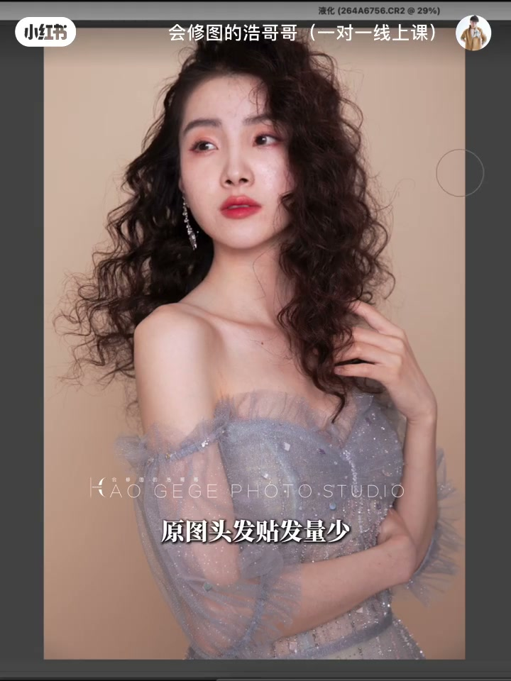
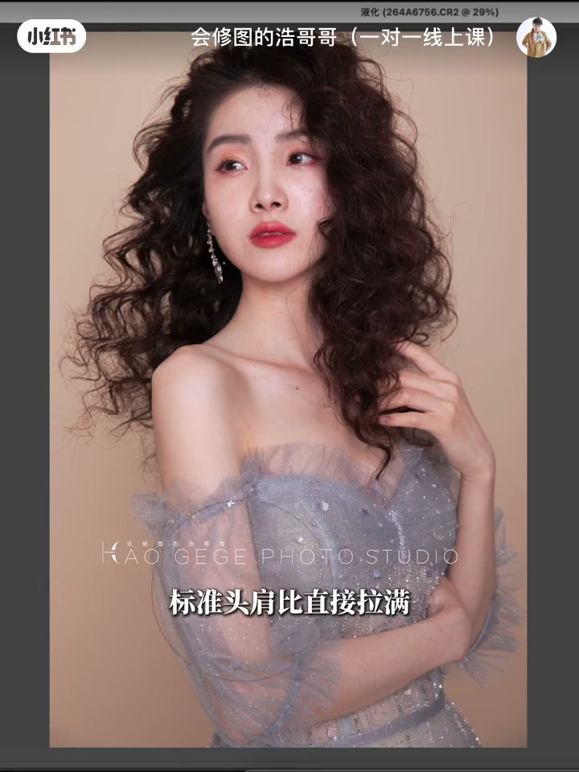
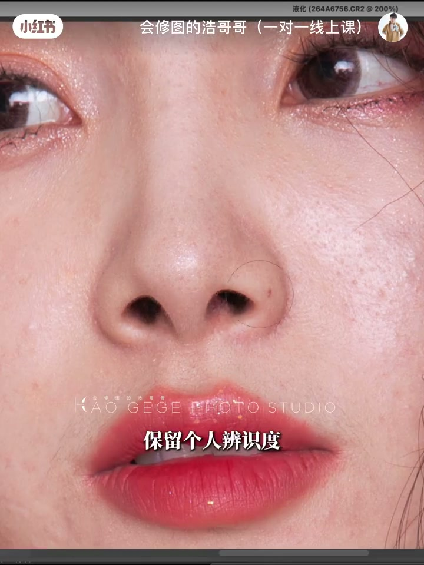
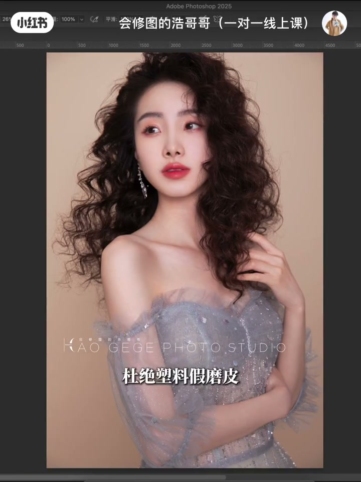

内容要点
做了 16 年后期、专职一人精修 10 年的修图师浩哥哥，用一条视频点破很多人的困惑：调色明明没问题，成片还是不好看——毛病根本不在颜色，全在液化。他完整演示了压箱底的真人液化思路：先处理头发（抬高颅顶、拉蓬松发丝，视觉上脸自然缩小），再调整体态身材（肩膀打开拉满标准头肩比、手臂收窄修瘦不修细），最后精修面部（脸型流畅微调保留辨识度、中性灰理光影、留住面部原生高光与皮肤肌理，杜绝塑料假磨皮）。收尾的金句是：片子廉价不高级，往往不是技术不足，而是修得过于完美。
知识结构
调色没问题成片还不好看，毛病全在液化；16 年后期经验给出真人液化完整思路。
原图头发贴头皮发量少，先抬高颅顶拉蓬松发丝，顺纹理倾向外扩；颅顶拉高，视觉上脸自然缩小。
肩膀微微打开，标准头肩比拉满；手臂收窄理顺轮廓，修瘦不修细；胸形松弛下垂轻轻提拉归位。
脸型只流畅微调、优化短板、保留辨识度；轻校五官比例；中性灰理光影，留住颧骨、面中、脸颊的立体光影。
保留皮肤原生肌理毛孔，只去暗沉疲惫，杜绝塑料假磨皮；最后统一肤色微调氛围——片子廉价往往不是技术不足，而是修得过于完美。
人像成片好不好看，液化比调色影响更大。正确的液化顺序：先头发（抬高颅顶显脸小），再体态（肩背头肩比、线条流畅），最后面部（微调保留辨识度+中性灰光影）。关键是不破坏原生高光与皮肤肌理，修出更好看的本人，而不是网红模板。
00:00-00:17开场：毛病不在颜色，全在液化
视频开门见山：「很多粉丝问我，调色明明没问题，成片还是不好看。我做了 16 年后期，专职一人精修就干了 10 年。实话难听，但修图真正的毛病根本不在颜色，全在液化。」
UP 主随即给出承诺：「到底应该怎么修？直接看这张原图。今天压箱底真人液化思路全公开——看完这条，你的修图质感直接上一个档次。」

00:17-00:52第一步头发与第二步体态：先整体后局部
第一步处理头发：「原图头发贴头皮、发量少，先抬高颅顶、拉蓬松发丝，顺着纹理倾向外扩。颅顶拉高，视觉上脸自然缩小，氛围感立刻到位。」UP 主特别叮嘱：「别上来死命推脸——客户一句『不像我』，一整天功夫全白费。客户要的是更好看的自己，不是千篇一律的网红模板。」
第二步调整体态身材：「肩膀微微打开，标准头肩比直接拉满，气场更强；手臂收窄、理顺轮廓，修瘦不修细，线条流畅不僵硬，别修得像两根细筷子；胸形松弛下垂，轻轻提拉归位。简单一步，体态挺拔，显年轻。」

00:52-01:16第三步面部：微调、保留辨识度、光影立体重塑
体态调整完成后再细化五官脸型：「脸型只流畅微调，优化短板，保留个人辨识度；轻微校准五官比例，协调画面才高级耐看；简单清理皮肤瑕疵，中性灰理顺全脸光影。」
UP 主强调一个重点：「一定要留住面部原生高光——颧骨、面中、脸颊的立体光影，是人像高级修图质感的关键。千万不要全部推平，保留皮肤原生肌理、毛孔，自然质感全部留住，只去除暗沉疲惫，杜绝塑料假磨皮。」

01:16-01:49行业真话：修得过于完美，反而廉价
收尾 UP 主说了一句行业真话：「片子廉价不高级，可能不是技术不足，而是修得过于完美——完美到失真，失去人像本身的灵魂。」
最后统一整体肤色、微调画面氛围，看成片对比：「没有换头，没有大幅度改五官，只是把它原本精致好看的模样还原放大。」并抛出一个互动问题：你们液化最容易翻车的部位是哪里？评论区发图留言，点赞最高的下期直接出教程。

完整转录（35段）
以下文本由 Whisper medium 模型自动转录，可能存在少量识别误差，已尽可能修正。
很多粉丝问我 调色明明没问题 成片还是不好看
我做了16年后期 专职一人精修就干了10年
实话难听 但修图真正的毛病根本不在颜色 全在液化
那到底应该怎么修 直接看这张圆图
今天压箱底真人液化思路全公开
看完这条 你的修图质感直接上一个档次
第一步 头发
圆图头发贴发量少 先抬高颅顶拉蓬松发丝
顺著纹理倾向外扩 颅顶拉高 视觉上脸自然缩小
氛围感立刻到位 别上来死命推脸
客户一句不像我 一整天功夫全白费
客户要更好看的自己 不是千篇一律网红模板
第二步 调整体态身材
肩膀微微打开 标准头肩比直接拉满 气场更强
手臂收窄理顺轮廓 修瘦不修细 线条流畅不僵硬
别修得像两根细筷子 胸形松弛下垂 轻轻提拉归位
简单一步 体态挺拔 显年轻
第三步 精修面部
体态调整完成 再细化五官脸型
脸型只流畅微调 优化短板 保留个人辨识度
轻微校准五官比例 协调画面才高级耐看
简单清理皮肤瑕疵 中性灰理顺全脸光影
重点记住 一定要留住面部原生高光
颧骨 面中 脸颊的立体光影
是人像高级修图质感的关键
千万不要全部推平 保留皮肤原生肌理 毛孔
自然质感全部留住 只去除暗沉疲惫 杜绝塑料假磨皮
一句行业真话 片子廉价不高级
可能不是技术不足 而是修得过于完美
完美到失真 失去人像本身的灵魂
最后统一整体肤色 微调画面氛围
看成片对比 没有换头 没有大幅度改五官
只是把它原本精致好看的模样还原放大
你们液化最容易翻车的部位是哪里
评论区发图留言 点赞最高的 下期直接出教程